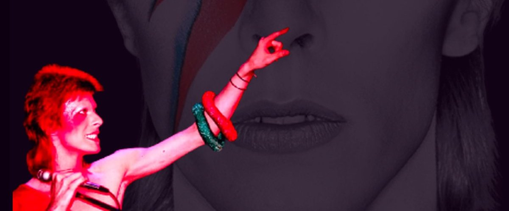
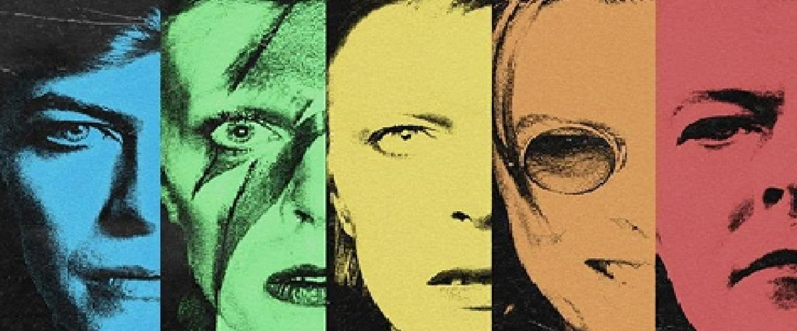

Quién fue David Robert Jones y los personajes que inventó para convertirse en David Bowie. Elegí una portada para entrar.

De Brixton al mundo: su familia, Berlín, sus últimos años y Blackstar.
Entrar →

Ziggy Stardust, Aladdin Sane, The Thin White Duke y los demás personajes.